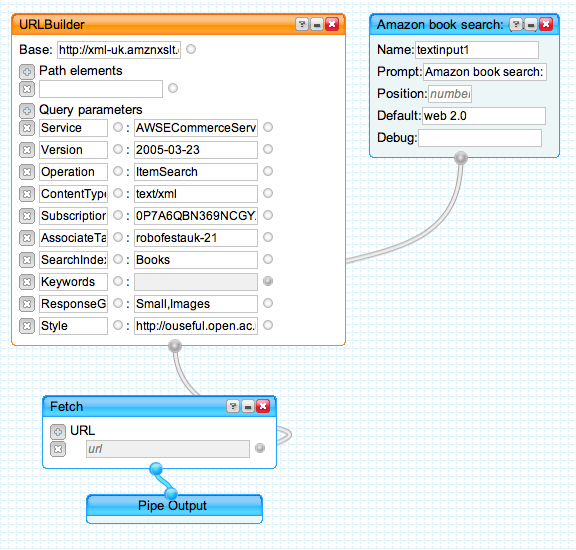

February 10, 2007
Amazon Book Search Pipe
I have *no* time to post anything for a day or two, so here's a screenshot of a pipe that took me less than five mins to make, reusing an Amazon book search feed strategy I'd generated some time ago to build my Grazr/Amazon book search widget.
Amazon-UK Books Search Pipe (or here's an Amazon.com Books Search Pipe).

All this is really doing is putting a URL to an RSS feed into the pipes environment (with a single search term argument in this case).
This demo identifies for me a couple of things I'd like to see the pipes environment offer.
- a listbox/select input option;
- a simple API for automatically creating a pipe on the fly from a URL; this could reuse ideas used in Grazrscript.
Picking up on that last point a bit more, here's an example growing out of the URL used in both the Grazr search form and the pipe mentioned above:
<grazr:formtemplate name="amznform" file="http://xml-%country%.amznxslt.com/onca/xml?Service=AWSECommerceService&Version=2005-03-23&Operation=ItemSearch&ContentType=text/xml&SubscriptionId=0P7A6QBN369NCGYXWBR2&AssociateTag=robofestauk-21&SearchIndex=%searchtype%&Keywords=%search%&ResponseGroup=Small,Images&Style=http://ouseful.open.ac.uk/amznSearch2RSS.xsl"/>
What I'm thinking is - would it be useful to be able to submit pipes to the community using something like:
http://pipes.yahoo.com/?newFeedPipeName=Amazon%20Search
&newFeedPipeURL=http://xml-%country%.amznxslt.com/onca/xml?Service=AWSECommerceService&Version=2005-03-23&Operation=ItemSearch&ContentType=text/xml&SubscriptionId=0P7A6QBN369NCGYXWBR2&AssociateTag=robofestauk-21&SearchIndex=%searchtype%&Keywords=%search%&ResponseGroup=Small,Images&Style=http://ouseful.open.ac.uk/amznSearch2RSS.xsl
and have the pipe generate a simple feed wrapper pipe, like the above, and auto-generate user input text boxes for the %delimited% arguments? (Okay, so it would be handy to be able to enumerate the %country% argument too, maybe with something like &_country=uk,us,ca?)
PS here's a Grazr fronted Amazon UK book search pipe:

Posted by ajh59 at February 10, 2007 01:47 PM